The fft and ifft commands take Fourier transforms and inverse Fourier transforms respectively of data supplied either from a file or from a function. In each case, a regular grid of abscissa values must be specified on which to take the discrete Fourier transform, which can extend over an arbitrary number of dimensions. The following example demonstrates the syntax of these commands as applied to a two-dimensional top-hat function:
step(x,y) = tophat(x,0.2) * tophat(y,0.4) fft [ 0: 1:0.01][ 0: 1:0.01] f() of step() ifft [-50:49:1 ][-50:49:1 ] g() of f()
In the fft command above, 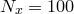 equally-spaced samples of the function step are taken between limits of and for each of 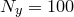 equally-spaced values of
are taken between limits of and for each of 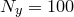 equally-spaced values of  on an identical raster, giving a total of samples. These are converted into a rectangular grid of samples of the Fourier transform f at
on an identical raster, giving a total of samples. These are converted into a rectangular grid of samples of the Fourier transform f at
| 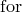 | 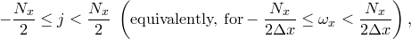 | ||||
| 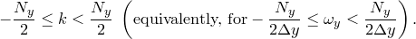 |
where and 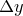 is analogously defined. These samples are interpolated stepwise, such that an evaluation of the function f for general inputs yields the nearest sample, or zero outside the rectangular grid where samples are available. In general, even the Fourier transforms of real functions are complex, and their evaluation when complex arithmetic is not enabled (see Section 4.5) is likely to fail. For this reason, a warning is issued if complex arithmetic is disabled when a Fourier transform function is evaluated.
In the example above, we go on to convert this set of samples back into the function with which we started by instructing the ifft command to take equally-spaced samples along the -axis between 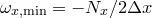 and 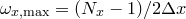, with similar sampling along the 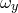-axis.
Taking the simpler example of a one-dimensional Fourier transform for clarity, as might be calculated by the instructions
step(x) = tophat(x,0.2) fft [ 0: 1:0.01] f() of step()
the fft and ifft commands compute, respectively, discrete sets of samples and of the functions and 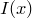, which are given by
and
where:
|
= |
Function being Fourier transformed. |
|
= |
Fourier transform of . |
|
= |
The number of values sampled along the abscissa axis. |
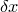 |
= |
Spacing of values sampled along the abscissa axis. |
|
= |
Spacing of abscissa values sampled along the axis. |
|
= |
|
It may be shown in the limit that becomes small – i.e. when the number of samples taken becomes very large – that these sums approximate the integrals
| (5.1) |
and
| 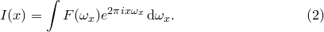 | (5.2) |
Fourier transforms may also be taken of data stored in datafiles using syntax of the form
fft [-10:10:0.1] f() of 'datafile.dat'
In such cases, the data read from the datafile for an  -dimensional FFT must be arranged in columns1, with the first containing the abscissa values for each of the dimensions, and the final column containing the data to be Fourier transformed. The abscissa values must strictly match those in the raster specified in the fft or ifft command, and must be arranged strictly in row-major order.
-dimensional FFT must be arranged in columns1, with the first containing the abscissa values for each of the dimensions, and the final column containing the data to be Fourier transformed. The abscissa values must strictly match those in the raster specified in the fft or ifft command, and must be arranged strictly in row-major order.
The Fourier transform of a top-hat function.
It is straightforward to show that the Fourier transform of a top-hat function of unit width is the function . If the Fourier transform of
|
||||||||||||||||
In this example, we demonstrate this numerically by taking the Fourier transform of such a step function, and comparing the result against the function sinc(x) which is pre-defined within PyXPlot: |
||||||||||||||||
set numerics complex |
||||||||||||||||
Note that the function Re(x) is needed in the plot statement here, since although the Fourier transform of a symmetric function is in theory real, in practice any numerical Fourier transform will yield a small imaginary component at the level of the accuracy of the numerical method used. Although the calculated numerical Fourier transform is defined throughout the range , discretised with steps of size , we only plot the central region in order to show clearly the stepping of the function: |
||||||||||||||||
In the following steps, we take the square of the function just calculated, and then plot the numerical inverse Fourier transform of the result: |
||||||||||||||||
g(x) = f(x)**2 |
||||||||||||||||
As can be seen, the result is a triangle function. This is the result which would be expected from the convolution theorem, which states that when the Fourier transforms of two functions are multiplied together and then inverse transformed, the result is the convolution of the two original functions. The convolution of a top-hat function with itself is, indeed, a triangle function. |
Footnotes

 .
.  is
is 

![$\displaystyle \frac{1}{2\pi \omega }\left[ \exp \left(\pi i\omega \right) - \exp \left(-\pi i\omega \right) \right] = \frac{\sin (\pi \omega )}{\pi \omega } = {\rm sinc}(\pi \omega ). $](images/img-0223.png)